Bella's A5: Subtractive Fabrication and CNC milling
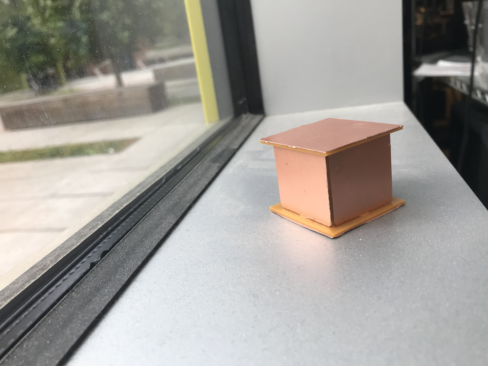 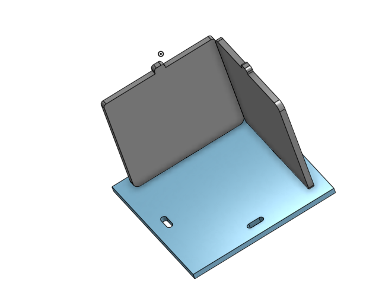
Process
- Step 1: Inspiration Understanding the requirements: Design a box with e.g. fingerjoints, tabs, or another joining method that can be milled out of FR1 on the Othermill. For this assignment I looked towards different cnc joints as my inspiration. I found one that I liked - which used sliding slots and started off with that one. I drew on paper the different types/ways it could work.
- Step 2: OnShape + Illustrator
- Step 3: Othermill + Assembly
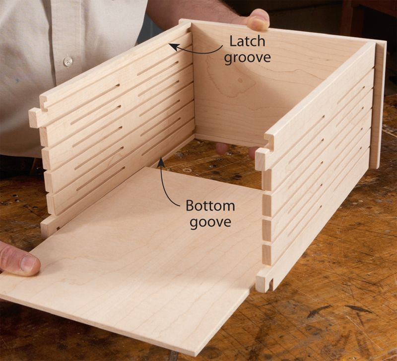 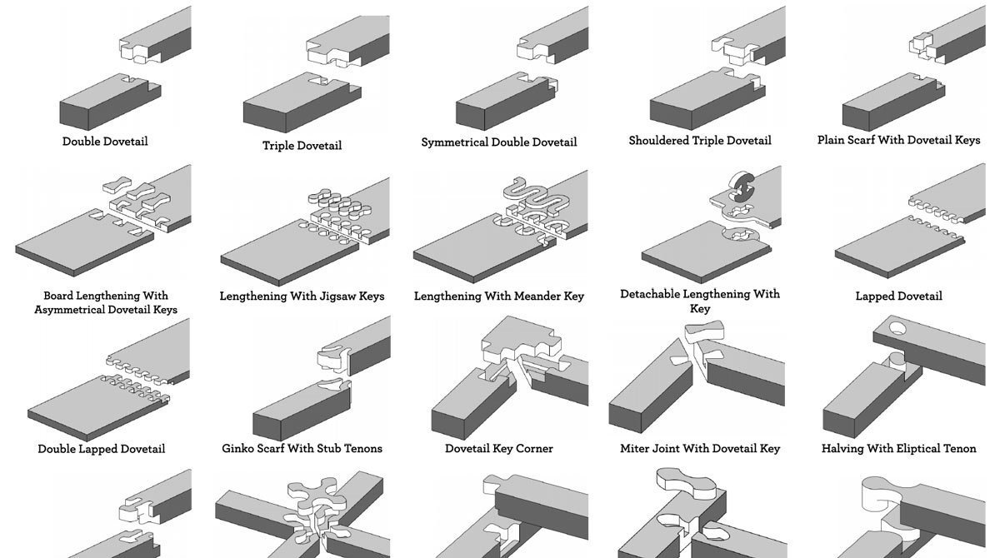 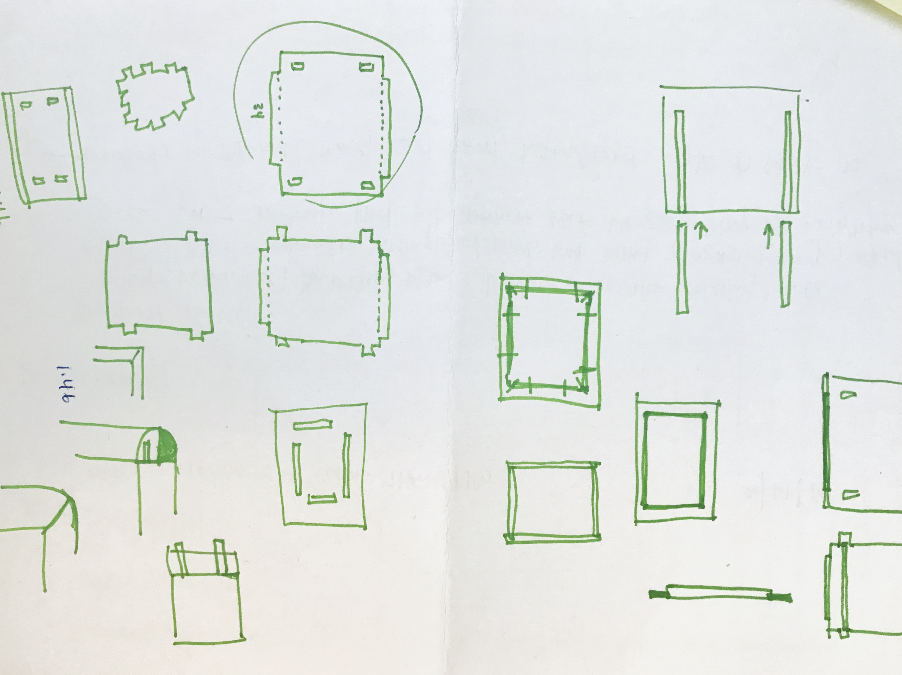
I used OnShape to draw three parts: Top & Bottom, Sides 1 & 3 and 2 & 4.
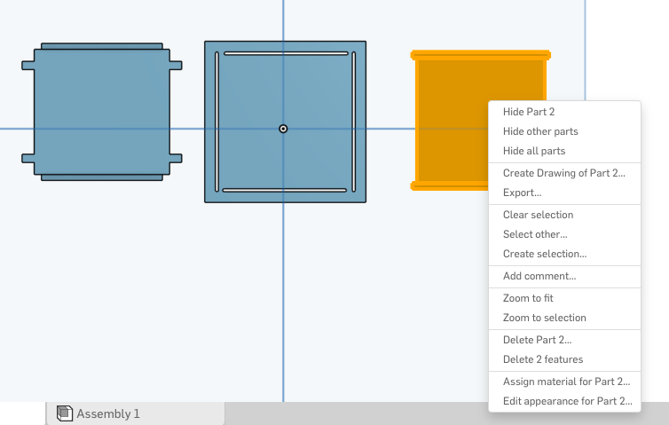 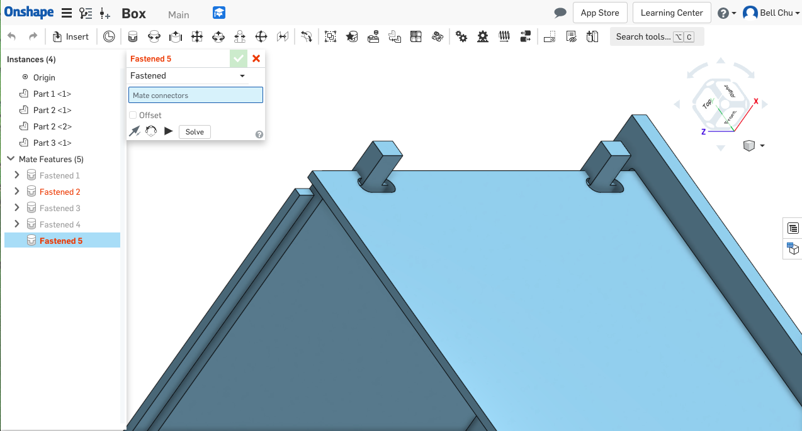 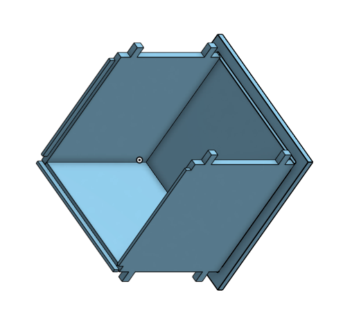
Later, I assembled the pieces together in Onshape and had to redo my entire model because I was not sure if I could engrave/cut parts of different levels (elevation/height). So then I simplified my model to be cutouts instead. Then I converted the file from Onshape to DWG and put into Illustrator to save as a SVG. 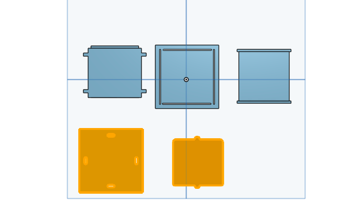 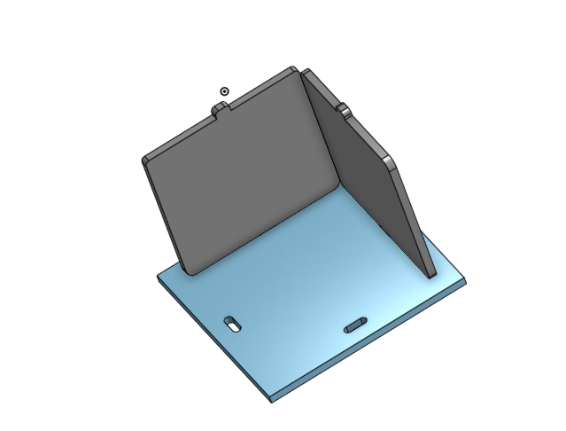Originally I tried to use KiCad but it would not allow me to import into a Gerber file.

I ran into Othermil problems - It would not cutout. I consulted with Area01 staff and Eric helped me change my SVG file a couple of times and in the end we just engraved and changed the depth to match my material.
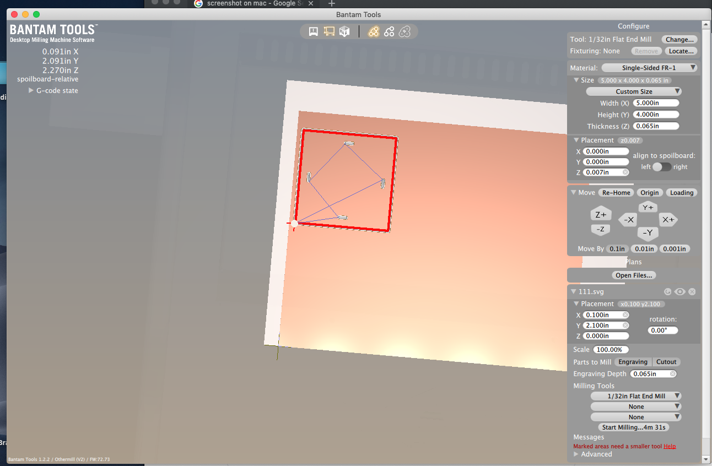
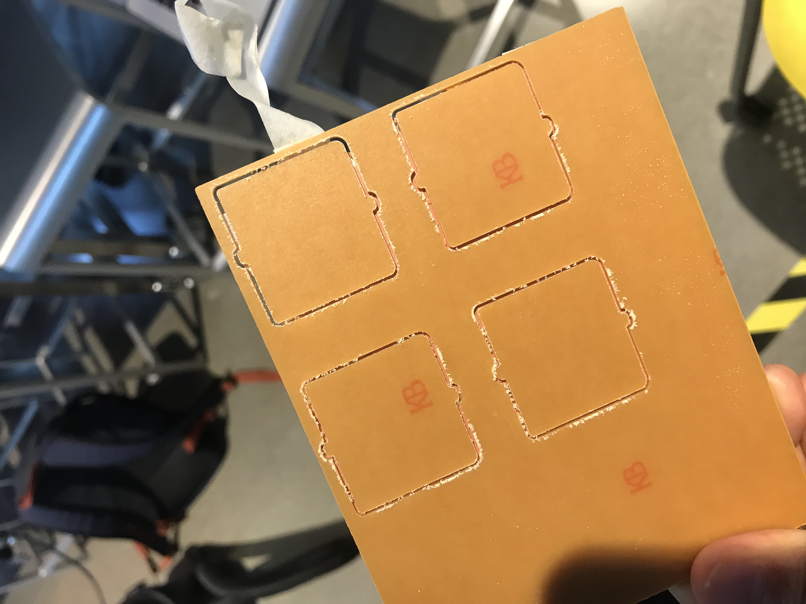 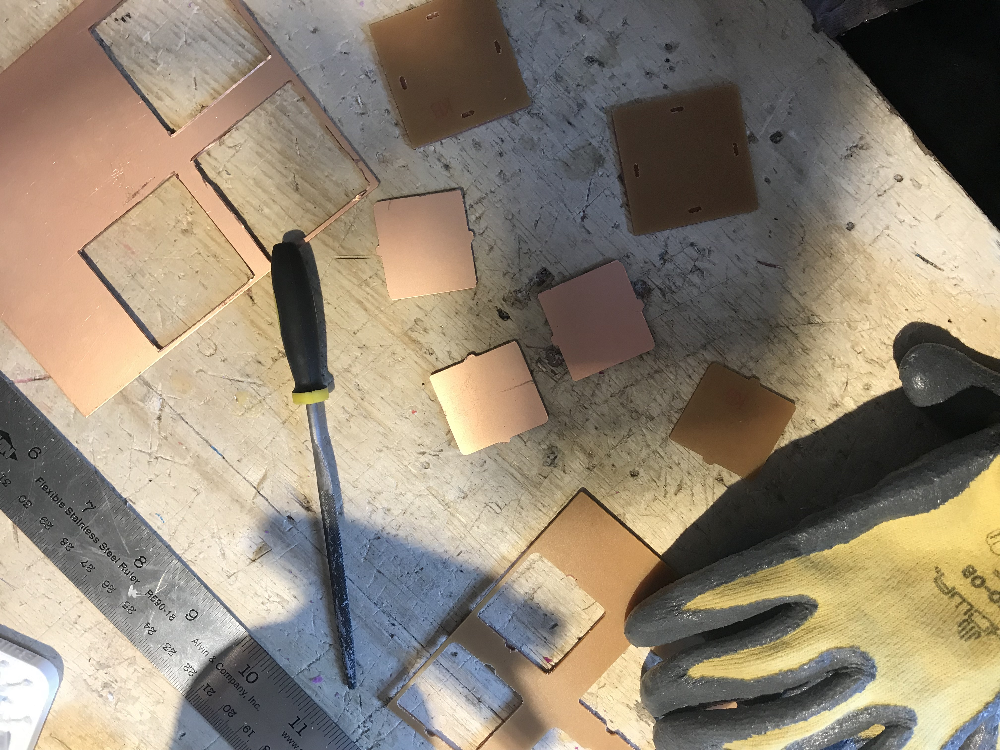 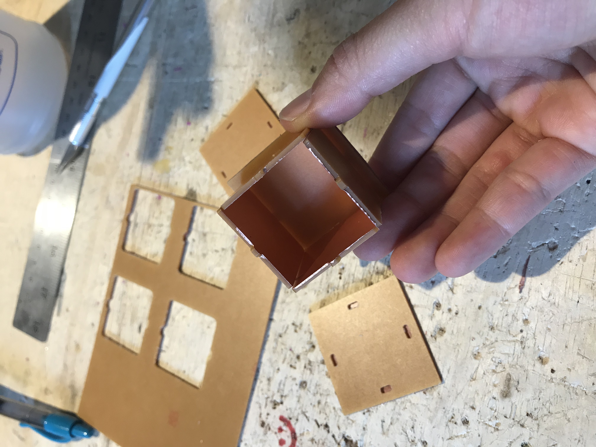 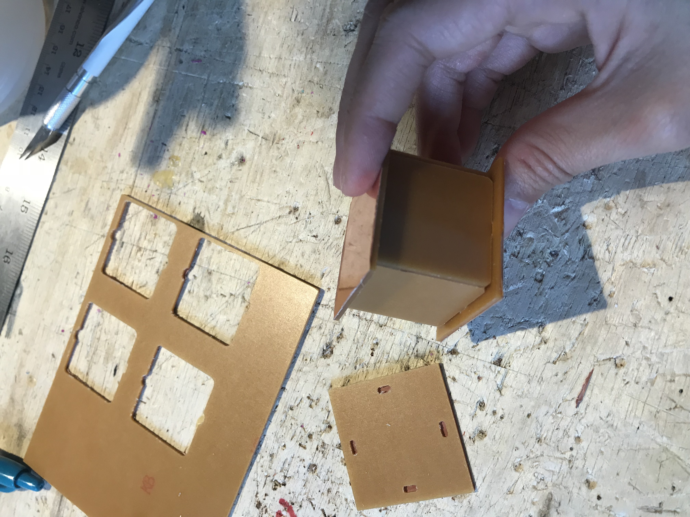
Source File
OnShape Link DWG File 1 DWG File 2 SVG File 1 SVG File 2{kind=link}
{kind=link}
Machine Settings: No Laser Printing this time around. No 3D printing. For the Othermill, I only used 1/32 flat end.
Kit Design and Execution
- Design Description: I drew inspiration from existing models of CNC joints online however I simplied my original design from it.
- Execution: I used OnShape for my CAD model and used illustrator to get an SVG file. The entire model was created in OnShape and saved as a SVG to then use in the Bantam Tool software. This software was used to create the gcode to then mill on the othermill.
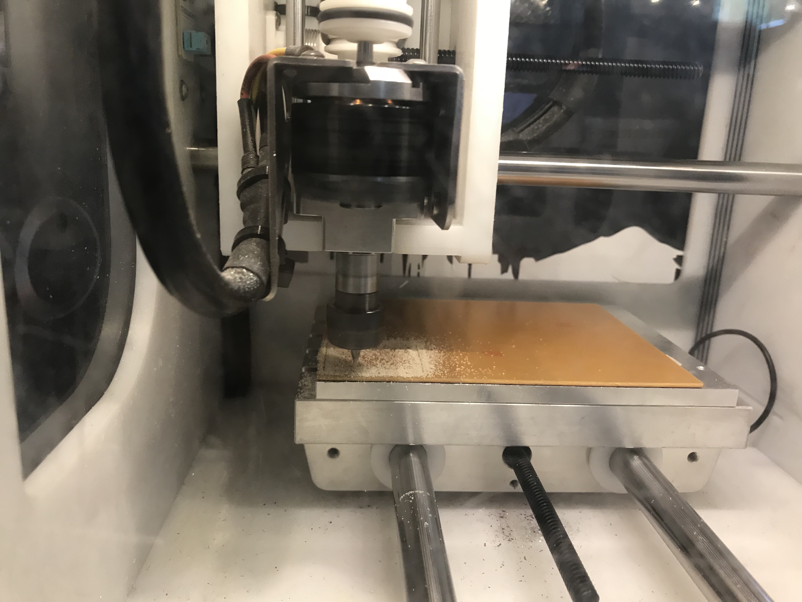
Peer-Teacher Attribution
I had Area01 staff - Eric help me adjust my SVG file and show me the loops to the Othermill.